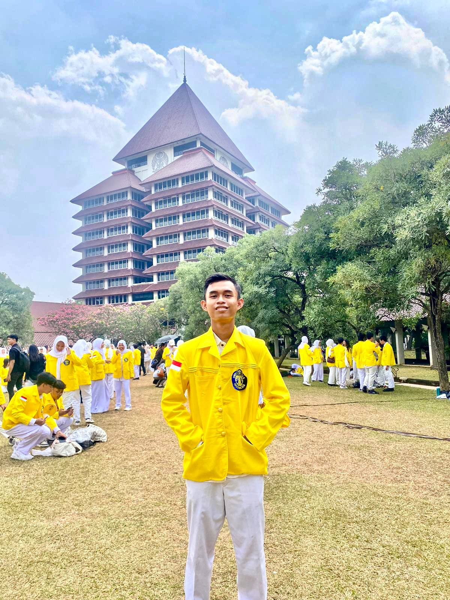

Ilustrasi konsep
Analisis Data Eksperimen Fisika
Pengolahan data pengukuran dengan statistika, visualisasi, dan analisis ketidakpastian untuk laporan teknis berbasis data.
Academic Project

Saya mahasiswa S1 Fisika Universitas Indonesia dengan fokus instrumentasi, yang memadukan analisis kuantitatif, pemrograman, dan pemahaman pasar keuangan.
Memiliki fondasi Python, SQL, statistika, analisis dan visualisasi data, serta dasar machine learning. Saya juga mengembangkan pengalaman akademik di bidang elektronika dan sistem digital.
View ProjectsFokus Instrumentasi • Sedang ditempuh
Instrumentasi Fisika, Fisika Komputasi, Elektronika, Statistika, dan Sistem Digital. Depok, Indonesia.
Bekasi, Indonesia • MIPA
Depok, Indonesia • Mentoring
Mendampingi adaptasi mahasiswa baru, mengelola komunikasi kelompok, serta memfasilitasi diskusi dan koordinasi tugas.
Remote • Market Analysis
Analisis teknikal XAUUSD melalui price action, market structure, RSI, ATR, serta perencanaan entry, exit, dan manajemen risiko.
Sukabumi, Indonesia • Community
Berkolaborasi dalam program lapangan dan kegiatan sosial bersama komunitas setempat.
Ada yang mau didiskusikan? Langsung kirim pesan aja ya..!
Terbuka untuk diskusi seputar analisis data, instrumentasi, sistem digital, dan pasar keuangan.